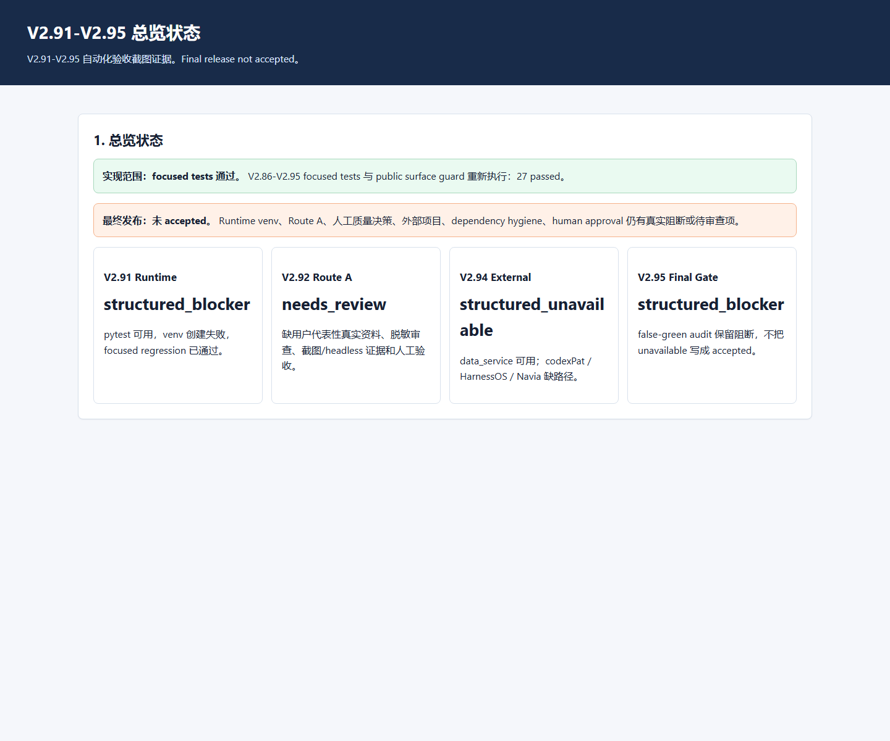
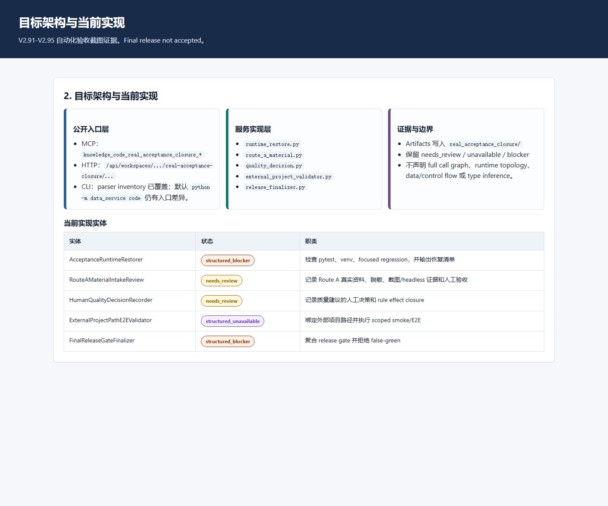
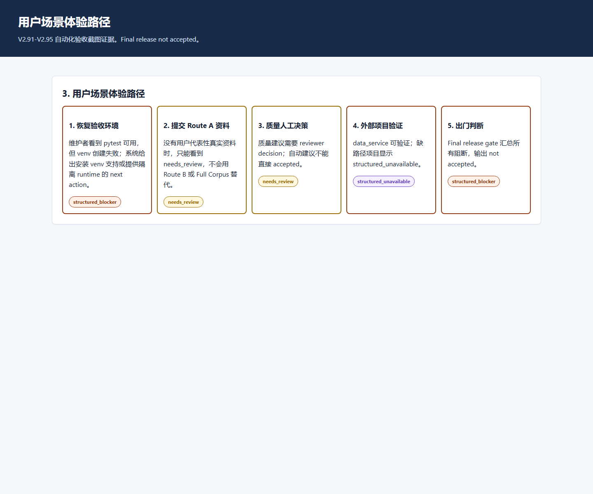
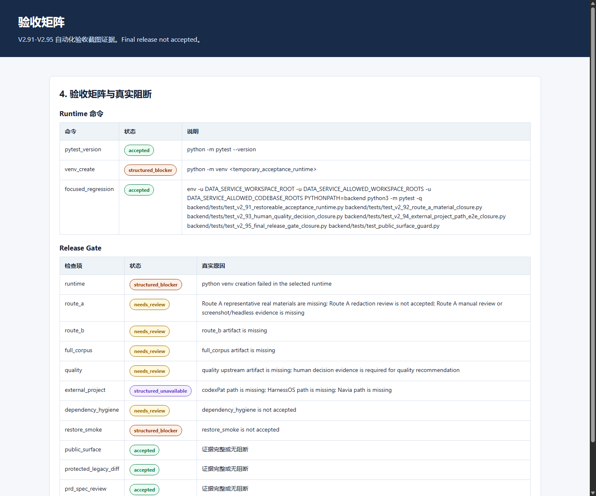
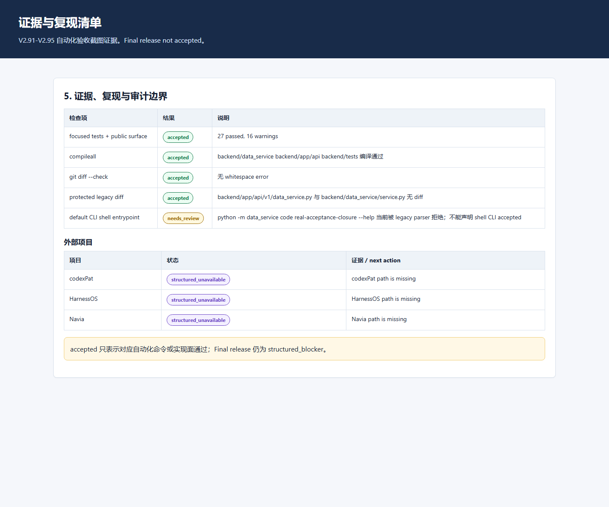

1. 审计总判定
最终发布：未 accepted。 V2.91 runtime restore 仍因 venv 创建失败为 structured_blocker；Route A、人工质量决策、人类 release approval 仍为 needs_review；外部三项目路径仍为 structured_unavailable。
Focused tests
含 V2.86-V2.95 与 public surface guard。
Runtime
pytest 可用，venv 创建失败。
Final Gate
阻断项被保留。
False-green
未把 review/unavailable/blocker 写成 accepted。
2. 原始 PRD 覆盖与功能验收
| PRD 能力 | 当前状态 | 真实证据 / 限制 |
|---|---|---|
| V2.91 Restoreable Acceptance Runtime | structured_blocker | runtime_diagnosis.json：pytest accepted；venv 创建失败；focused regression accepted |
| V2.92 Route A Representative Material Closure | needs_review | manual_acceptance_record.md：缺用户代表性真实资料、脱敏审查、截图/headless evidence、人工验收 |
| V2.93 Human Quality Decision Closure | needs_review | quality_closure_report.md：缺真实 reviewer decisions；自动建议不替代人工 |
| V2.94 External Project E2E Path Closure | structured_unavailable | data_service 可执行；codexPat/HarnessOS/Navia 缺真实路径 |
| V2.95 Final Release Gate Closure | structured_blocker | final_gate_summary.json：聚合阻断并拒绝 final accepted claim |
3. 目标架构与当前架构实现
目标公开入口
- MCP tools：
knowledge_code_real_acceptance_closure_* - HTTP route family：
/api/workspaces/{workspace_id}/codebases/{codebase_id}/real-acceptance-closure/... - CLI parser inventory：
code real-acceptance-closure
当前实现实体
runtime_restore.pyroute_a_material.pyquality_decision.pyexternal_project_validator.pyrelease_finalizer.py
证据与限制
- 真实 artifacts：
real_acceptance_closure/ - 不改写 V2.81-V2.90 上游证据
- 不声明完整设计意图恢复、full call graph、runtime topology、data/control flow、type inference。
当前架构差异
| 目标能力 | 实现状态 | 差异 / 待人类处理 |
|---|---|---|
| 可复跑验收 runtime | structured_blocker | 代码已实现诊断和恢复清单；本机缺 venv 支持 |
| Route A 真实资料闭环 | needs_review | 代码已实现资料/脱敏/人工验收结构；缺真实资料和人工验收 |
| 质量人工决策闭环 | needs_review | 代码已实现 decision recorder；缺人工 reviewer decisions |
| 外部项目 E2E 闭环 | structured_unavailable | data_service 可用；三外部项目路径缺失 |
| 最终 release gate | structured_blocker | 代码已聚合并拒绝 false-green；高风险输入未闭环 |
4. 用户可体验路径
- 维护者打开报告，先看到 final release not accepted，而不是被隐藏的“全部通过”。
- 进入 Runtime 诊断，看到 pytest 可用、venv 创建失败和修复建议。
- 进入 Route A 面板，看到真实资料、脱敏、截图/headless evidence、人工验收缺口。
- 进入质量决策面板，看到自动质量建议不能替代人工 decision。
- 进入外部项目面板，看到 data_service 可跑，codexPat/HarnessOS/Navia 缺路径。
- 进入 final release gate，看到所有阻断项被汇总，final release 仍为
structured_blocker。
这条体验路径是当前项目能真实提供的审计体验；它不是最终发布成功体验。
5. 自动化命令与复现证据
| 检查项 | 命令 / 方法 | 结果 |
|---|---|---|
| focused tests + public surface | PYTHONPATH=backend python3 -m pytest -q backend/tests/test_v2_86_... backend/tests/test_v2_95_... backend/tests/test_public_surface_guard.py | 27 passed, 16 warnings |
| compileall | PYTHONPATH=backend python3 -m compileall -q backend/data_service backend/app/api backend/tests | passed |
| diff check | git diff --check | passed |
| protected legacy diff | git diff -- backend/app/api/v1/data_service.py backend/data_service/service.py | empty diff |
| headless screenshot capture | Chrome headless with temporary user-data-dir | passed; temporary profile removed |
默认 shell CLI caveat：PYTHONPATH=backend python3 -m data_service code real-acceptance-closure --help 当前被 legacy parser 拒绝。测试已验证 code parser inventory，但不能把默认 shell CLI 描述为 accepted。
6. Release Gate 与 False-green 审计
| Gate 检查项 | 状态 | 阻断原因 |
|---|---|---|
| runtime | structured_blocker | python venv creation failed in the selected runtime |
| route_a | needs_review | Route A representative real materials are missing; Route A redaction review is not accepted; Route A manual review or screenshot/headless evidence is missing |
| route_b | needs_review | route_b artifact is missing |
| full_corpus | needs_review | full_corpus artifact is missing |
| quality | needs_review | quality upstream artifact is missing; human decision evidence is required for quality recommendation |
| external_project | structured_unavailable | codexPat path is missing; HarnessOS path is missing; Navia path is missing |
| dependency_hygiene | needs_review | dependency_hygiene is not accepted |
| restore_smoke | structured_blocker | restore_smoke is not accepted |
| public_surface | accepted | 证据完整或无阻断 |
| protected_legacy_diff | accepted | 证据完整或无阻断 |
| prd_spec_review | accepted | 证据完整或无阻断 |
| human_approval | needs_review | human_approval is not accepted |
False-green audit 通过的含义是：系统拒绝 final accepted claim，而不是 final release 已通过。
7. 截图证据 Manifest
| 截图 | 主题 | 证明内容 | 尺寸 | 字节数 | sha256 |
|---|---|---|---|---|---|
01_overview.png | 总览状态 | 展示实现范围通过、最终 release gate 阻断和各子阶段状态。 | 1440 x 1200 | 63364 | 29b043270314271b456657d1407e10edfd96d40c8590bd74e4eda8be7669349c |
02_architecture.png | 目标架构与当前实现 | 展示 public surface、服务实现层、证据层和边界。 | 1440 x 1200 | 82657 | ff89b044612d9067eb555b5edc5d3c99397f6279d829406795f4679774fc1a9f |
03_user_path.png | 用户场景体验路径 | 展示维护者从恢复环境到出门判断的真实体验链路。 | 1440 x 1200 | 69580 | 551c1101eeffad781479e9cbf6d4658788ddc67dc0c261240b9c3a18104f2e45 |
04_acceptance_matrix.png | 验收矩阵 | 展示 runtime 命令、release gate 检查和真实阻断项。 | 1440 x 1200 | 105333 | c72df3a61b9fe80bc3246a5d2f7c4d4837bdbcd22565685585d4aec21381bb39 |
05_evidence_manifest.png | 证据与复现清单 | 展示测试、编译、diff、legacy guard、CLI caveat 和外部项目状态。 | 1440 x 1200 | 69668 | 93c7a7d1bccf666c67e945eb6b46838163e67a423c087adff73c1e526a940c5c |





8. 人类复核清单
- 复核第 2 节 PRD 能力是否全部映射到真实状态。
- 复核第 3 节代码实体和当前架构差异是否清楚。
- 复跑第 5 节命令，确认 focused tests、compileall、diff check 和 protected diff。
- 确认第 6 节没有把 Route A、质量人工审查、外部项目和 human approval 写成 accepted。
- 查看第 7 节截图、尺寸和 sha256，确认截图与报告结论一致。
9. 最终验收评价
阶段性自动化开发验收：通过，但带真实阻断。 本阶段文档完整支撑的实现面、测试面、公开接口面和审计面已完成并可复核。
最终出门验收：不通过。 不通过原因不是代码测试失败，而是本机 venv 创建支持、Route A 真实资料、人工质量决策、外部项目路径、dependency hygiene 和 human approval 仍缺真实证据。